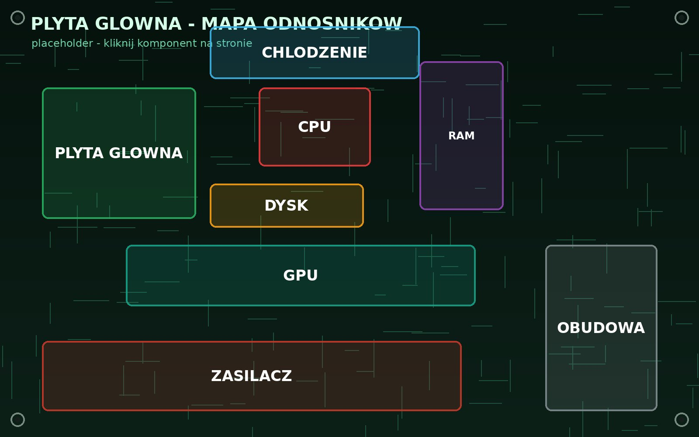

Złóż swój komputer — krok po kroku
Najedź i kliknij komponent na płycie głównej, aby zobaczyć jego zdjęcie. Niżej znajdziesz animowaną galerię oraz wielki schemat montażu wymagający przewijania.
1 Mapa odnośników podzespołów
Duże zdjęcie poniżej działa jako mapa odnośników. Każdy prostokąt to
responsywny hotspot (nakładka <div>/<button> pozycjonowana
procentowo nad obrazem) — podświetla się przy najechaniu i pokazuje etykietę.
Większość hotspotów otwiera zdjęcie w lightboxie, a
Obudowa otwiera obrazek w nowym oknie.

Wskazówka: kliknij Obudowę (prawa strona), aby zobaczyć metodę „grafika w nowym oknie”. Pozostałe komponenty otwierają się w lightboxie.
2 Galeria miniatur — animowane pojawianie
Miniatury pojawiają się z animacją fade-in + slide podczas przewijania
(mechanizm IntersectionObserver). Kliknięcie miniatury otwiera
lightbox z animacją skali i przezroczystości. Ikoną
↗ otworzysz dane zdjęcie w nowym oknie.
3 Wielki schemat montażu — wymaga przewijania
Trzeci sposób wyświetlania grafiki znajduje się na osobnej podstronie:
bardzo duży obraz (3000 × 2000 px) w kontenerze z overflow:auto oraz własnymi
przyciskami zoom (+ / −). Obraz jest tak duży, że trzeba go przewijać
w poziomie i pionie.
O projekcie
Statyczna strona (HTML + CSS + czysty JavaScript, bez frameworków) prezentująca trzy
sposoby wyświetlania grafiki: (a) animowane pojawianie się + lightbox,
(b) grafika w nowym oknie, (c) bardzo duży obraz
wymagający przewijania. Szczegóły techniczne opisano w pliku opis-wykonania.txt.
Wykonawcy: Veronika (nr 8), Konrad (nr 12), Sebastian (nr 16)